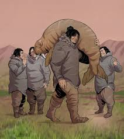
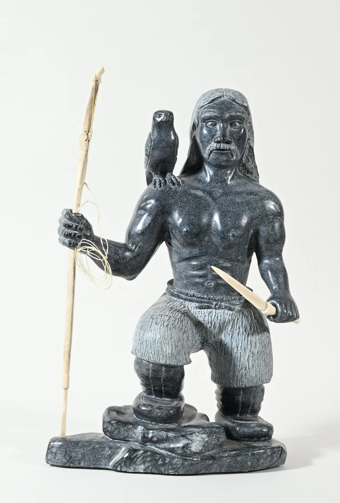

TUNNIT
Introduction
The Tuniit people, associated with the Dorset culture, are an ancient archaeological population that inhabited the Arctic regions (Northern Canada, Greenland, and Alaska) from approximately 500 BCE to 1500 CE. According to archaeological evidence, the Tuniit were skilled hunters who relied on marine hunting and fine stone tools, and they disappeared before the arrival of the Inuit (Thule) who replaced them. In Inuit mythology, the Tuniit are depicted as a giant and strong people who were simultaneously shy and easily routed, and it was believed that they slept with their legs in the air to be able to run faster.
he Tuniit are a Selkie ethnicity that primarily lives in the vicinity of the large island of Umingmak in the Northern Region. They are part of the Taaru cultural group, and are closely connected to the Unughuit who also live on Umingmak.
History
A second wave of people migrated into the Arctic from the west about 1000 BC. Archaeologists call these people the Dorset Culture, and the Inuit called them the Tuniit. These people were tall and strong, and they seem to have reached Greenland, on the Atlantic coast, about 500 BC. About 200 AD, the Tuniit seem to have abandoned Greenland again, and then around 1000 AD they began to migrate back south into Greenland, at first living mainly in the north and gradually moving south. The Arctic was getting warmer around 1000 AD. So maybe this made it harder for the Tuniit to find and hunt the animals they depended on for food.
Theories
One researcher mentioned that the Tuniit people, the initial inhabitants of the Canadian Arctic before the Inuit, were giants whose height ranged between 2.5 and 3 meters. They possessed superhuman strength that allowed them to lift rocks easily. Their alleged disappearance is explained by the assertion that "the giants became extinct," linking them to legends of gigantic beings.
A very strange story is circulating on "Arctic Legends" pages, claiming that the last man of the Tuniit people was seen in the 18th century. The story describes this man as huge in stature, living alone and fleeing from humans. The narrative alleges that he was mistakenly killed by a group of hunters. Although this story is historically undocumented, it is widely spread as part of the folklore associated with the giants' disappearance.
Some historians say that the Tuniit people are actually remnants of an ancient polar civilization that existed before the last Ice Age. They claim that these people lived in "Arctic Atlantis" or "Northern Atlantis." It is believed that they possessed special and advanced knowledge of underwater navigation beneath the ice, suggesting a high level of lost technological skill and adaptation.
Some historical sources claim that the Inuit people did not peacefully "replace" the Tuniit people, but rather "drove them out by force." This transition allegedly occurred after a major battle between the Inuit and the Tuniit, which ultimately led to the extinction of the Tuniit afterward, suggesting a violent end to their civilization.
There are narratives claiming that the Tuniit people lived during the period of the "Green Arctic," which was a time when the North Pole was covered in forests. During that period, there were exposed rivers and mountains before they became covered by ice. These narratives assert that the Tuniit civilization suddenly disappeared when the ice returned to cover the region.
Another claim, popular among some historians, is that the Toneit people not only became extinct in the north but also migrated south across Canada to the Andes Mountains. They are alleged to be the true origin of the ancient Tiahunaku civilization, or the actual builders of the famous Puma Punco site, thus linking a polar civilization to the monumental building skills of South America.
Legends surrounding the Tuniit highlight their formidable physical attributes, often portraying them as possessing a unique connection to the natural world, possibly hinting at rudimentary shamanistic practices or advanced hunting techniques. However, it’s important to view these narratives through the lens of oral tradition, which likely includes embellishments over time. The reality of the Tuniit’s abilities likely reflects practical skills developed through adaptation to the challenging Arctic environment.
Elder Frank Analok recalls, “It is said that Tuniit were afraid of the ordinary people and would run away when encountered,” Analok said. “Even though the ordinary people did not threaten them they would run away. It is said that the Inuit wanted to have a closer look at them, but couldn’t.”
The Tuniit were originally Human, but were transformed by the god Silakpak after the great hero Igalaaq petitioned the god for help in surviving the harsh northern winter. He gifted them with the artifact known as Igalaaq's Wand, which had the power to make any Human into a Selkie. The wand has since been lost, an event which the Tuniit consider one of the greatest tragedies ever to befall them.
The giants mentioned as being encountered by Arthur at “Grocland” or as some believed “Greenland” like the “Pygmies” before could like the Pygmies, be backed up by Inuit legend. The Inuit as well is describing smaller people, also describe giants, whom they call the Tuniit. The Inuit claim that these were the first inhabitants of the area, but despite their large size were easily overcome in war. This kind of neatly ties in with the earlier description by Olaus Magnus, of the fighting spirit of the “dwarfs”. It should also be stated that Mercator also claims that one of the four Islands surrounding the North pole is inhabited by Giants!
Description
Poeple
Inuit lore describes the Tuniit as robust and powerful beings capable of navigating the harsh Arctic environment with ease. Their appearance is often associated with strength and endurance, with tales suggesting their skin was as hard as stone or ice. Despite their formidable presence, details about their facial features remain ambiguous, allowing storytellers to interpret their visage creatively

In Inuit legends and stories, the Tuniit people are depicted with superhuman physical characteristics, being giants known for their superhuman strength; they were described as "very tall" (much taller than the Inuit) and broad-shouldered. Their strength was astounding, to the extent that one Tuniit could lift a heavy stone that ten Inuit could not. Furthermore, they would hunt polar bears and large seals with their bare hands or with a single harpoon, highlighting their extreme skill and might.
Despite their immense strength and size, Inuit legends depicted the Tuniit as fearing the Inuit and fleeing when they heard a strange sound. It is also said that they were "ashamed of being seen"; thus, they would cover their faces with the large sleeves of their furs when approached by humans, highlighting a strange contradiction between their massive physical power and their shy, introverted nature.
The Tuniit, within Inuit mythology, are often portrayed as a collective group or race rather than individual families, reflecting a strong sense of kinship and communal living. Legends depict them as the original inhabitants of the Arctic regions before the arrival of the Inuit, suggesting a deep ancestral connection. The nature of their relationship with other mythical figures varies across narratives, with some stories hinting at a familial bond, portraying the Tuniit as ancestors or distant relatives of the Inuit.

Inuit stories provide little insight into the detailed social structure of the Tuniit. Legends suggest they lived in small, scattered settlements across the Arctic, raising questions about their family dynamics and societal organization. The specifics of Tuniit family life and community structure remain unresolved mysteries within Inuit mythology.
Tuniit clothing is made from fur and leather, and typically consists of a shirt, parka, and pants. Their clothing often features intricate patterns and designs. Additionally, they often adorn themselves with jewelry made from ivory, bone, and other natural materials. When they swim, they wear a tight-fitting suit made from a specially prepared seal-skin, sewn with sinew, with draw-string seals. The sealskin is soaked, stretched, rubbed, and greased to keep it soft and waterproof. This, along with their natural advantages, allows them to remain in the chill waters of the Avannarleq Sea longer than any Human could withstand.
Language
A notable aspect of the Tuniit is their language, described in legends as a simple tongue known as “Kutak” or “baby-talk.” This linguistic detail invites various interpretations—it may reflect a simpler societal structure, a communication barrier with the Inuit, or symbolize the perceived innocence and timidity associated with the Tuniit in folklore. The nuances of Tuniit culture, including their social interactions and language, contribute to the enigmatic allure surrounding these ancient beings in Inuit mythology.
The legendary race known as the Tuniit is not solely referred to by that name within Inuit mythology; they are also known as “Tornit” and “Tuniq” in various myths. These alternative names reflect the diverse oral traditions and dialects across different Inuit communities scattered across the Arctic regions. The term “Tuniit” is just one of many monikers associated with these mysterious beings. Different Inuit groups have their own variations, with some referring to them as “Saqqaqtang,” “Tornit,” or “Siqirnuit.” These variations highlight the regional interpretations of the Tuniit legend.Furthermore, the Tuniit are also known by the name “Sivullirmiut” in certain Inuit communities.
Religion & folklore
The Tuniit revere the Anirniit family of spirits, as is common among the Taaru people. They especially honor Silakpak, the god of the northern sea and the ocean mammals, especially seals, sea-lions, and walruses. With the end of every whaling season the last fluke of the year is brought to land by each sinaaq for the Kangirsujuaq Kajattat where they are ritually offered back to Silakpak.
They also acknowledge and honor the tuurngaq, the small spirits which inhabit every current, stone, stream, and breeze. These spirits can be helpful or malicious, and Tuniit shamans will frequently have formed a bond to one or more of the tuurngaq who help them.
The Tuniit, like the other Taaru cultures, celebrate the new year with a festival named Quviasukvik in Unugtitut. The new year officially begins when the Candles pass from the sky. Quviasukvik is marked with a great feast and rituals intended to please the gods and the local tuurngaq. These rituals vary greatly from one community to the next, and are tailored to the local spirits and gods where the ilagiit is located.
Research
Scholars and scientists called them the Dorset culture (500 BCE–1500 CE) that preceded the Inuit culture in Arctic North America. It is named after Cape Dorset in Nunavut, Canada where the first evidence of its existence was found. The culture has been defined as having four phases due to the distinct differences in the technologies relating to hunting and tool making. Artifacts include distinctive triangular end-blades, soapstone lamps and burins. Longhouses use much bigger stone than the Ancestral Inuit, potentially the reason the Myth came to be as human remains show to be normal size.
But until now archaeologists couldn't find evidence of whether the Inuit and the Dorset existed in the same place at the same time as is stated in Inuit stories. "A huge and controversial and sort of major issue in the whole Arctic past is whether the two actually did meet," University of Toronto archaeologist Max Friesen said.He also said whether the Inuit and the Tuniit actually interacted is another mystery he and his team are hoping to solve. There is still very little evidence that proves the two groups were in direct contact with each other.